실행 원형
목표 → 계획
입력목표 금액 · 목표일
생성주·월·연 단위 필요 저축액과 진도
오늘이번 달 목표 카테고리에 필요한 금액 배정
앱 24개의 공개 화면과 공식 근거를 비교하고, 핵심 10개는 FlowMe에서 어떻게 보일지 4단계 개념 UI로 시각화했습니다.
강한 구조는 입력을 0~2개로 줄이고, 전체 결과를 먼저 보여준 뒤, 오늘 한 행동만 꺼냅니다. FlowMe는 추천 엔진·진단·마켓플레이스를 만들기보다 공개 원문을 일정·체크·진도·외부 결과물로 연결하는 역할에 집중해야 합니다.
각 서비스가 무엇을 입력받아 어떤 결과를 만들고, 오늘 무엇을 꺼내 주는지 비교합니다.
원문 화면 2장과 발견 → 최소 입력 → 결과 미리보기 → 오늘 실행 4화면을 함께 봅니다.
집안일을 누구부터 무엇을 해야 할지 정하기 어려울 때
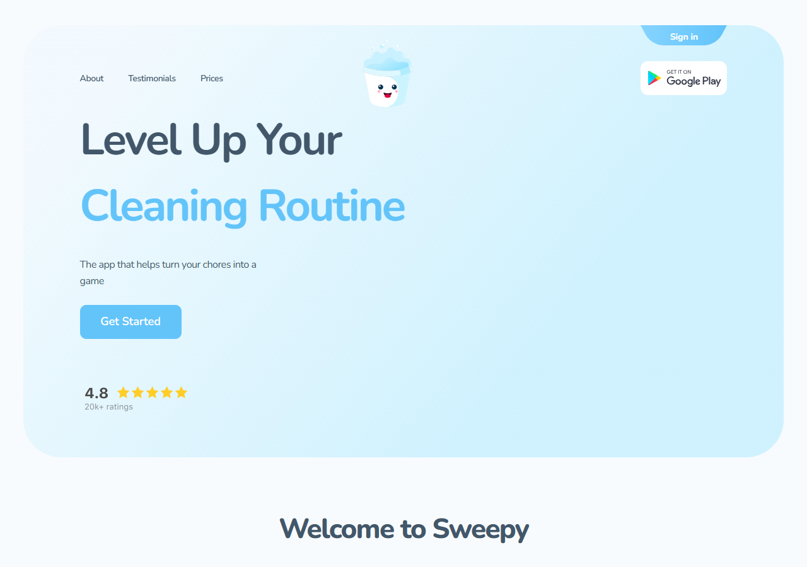
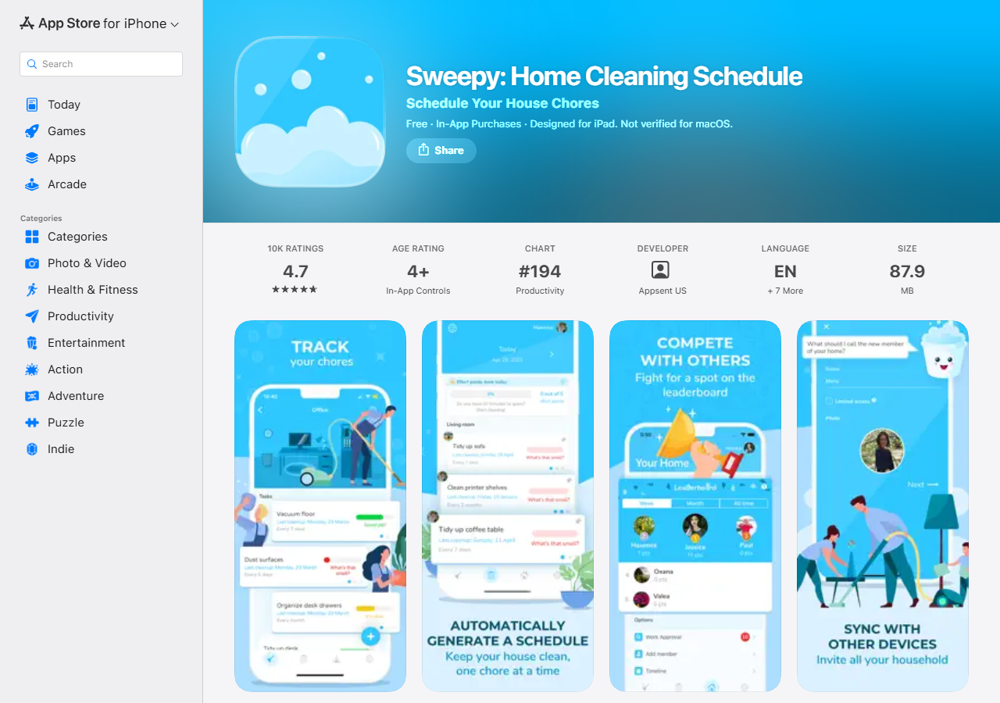
벤치마크 구조를 FlowMe 사용 흐름에 대입한 개념 UI입니다. 실제 앱 화면이나 원문 콘텐츠 복제가 아닙니다.
집안일을 누구부터 무엇을 해야 할지 정하기 어려울 때
계획 생성에 필요한 값만 먼저 정합니다.
공간별 반복 청소 일정과 오늘 할 일에서 꺼낸 현재 행동
집안일을 누구부터 무엇을 해야 할지 정하기 어려울 때
공간/방 · 청소 빈도
공간별 반복 청소 일정과 오늘 할 일
오늘 배정된 청소 항목 완료
빈도·가용량·가족 배정을 바꾸면 스마트 일정이 다시 조정된다.
공간별 반복 청소 일정과 오늘 할 일
오늘: 오늘 배정된 청소 항목 완료
수정: 빈도·가용량·가족 배정을 바꾸면 스마트 일정이 다시 조정된다.
App Store의 공개 평점·리뷰 표면과 공식 후기 영역이 존재한다.
개별 리뷰에 대한 제작자 응답은 이번 공개 근거에서 확인하지 않았다.공식 사이트는 Premium과 가구 공유 기능을 안내한다.
실제 제휴 의사·전환율·매출 기여는 확인하지 않았으며 사업 가설로 승격하지 않는다.공개 청소표를 출처 링크와 함께 날짜 없는 Flow 또는 반복 일정으로 저장하고 외부 캘린더로 보낼 수 있다.
Sweepy은(는) '공간·빈도 설정 → 스마트 일정 생성 → 오늘 할 일 → 완료·가족 공유' 흐름으로 다음 행동을 이어 준다. 매일 무엇을 할지 계산해 주어 사용자의 재계획 부담이 낮다. (9/10)
최초 입력은 공간/방, 청소 빈도, 하루 가용량이며 필수 2개다. 초기 설정은 조금 길지만 집 전체 계획을 만드는 데 직접 쓰인다. (7/10)
입력 뒤 '공간별 반복 청소 일정과 오늘 할 일'가 생성된다. 결과물과 오늘 목록의 관계가 분명하다. (9/10)
실행 화면의 다음 행동은 '오늘 배정된 청소 항목 완료'이다. 오늘 목록 중심이라 시작 지점이 선명하다. (9/10)
빈도·가용량·가족 배정을 바꾸면 스마트 일정이 다시 조정된다. 재배치가 자동화되어 유지관리형 벤치마크로 강하다. (9/10)
방·욕실·주방 등 공간별 작업과 계절 관리로 확장된다. 공개 제작자 콘텐츠를 공간·기간별 루틴으로 찾기 좋다. (8/10)
공식 사이트는 Premium과 가구 공유 기능을 안내한다. 서비스 자체 데이터는 제휴 없이는 콘텐츠 원천으로 쓰기 어렵다. (6/10)
앱 안 실행은 선명하지만 캘린더·시트로의 공개 내보내기 근거는 약하다. FlowMe는 일정·체크리스트 이식성에서 차이를 만들 수 있다. 점수가 높을수록 외부 도구로 옮길 여지가 크다. (8/10)
공개 청소표를 출처 링크와 함께 날짜 없는 Flow 또는 반복 일정으로 저장하고 외부 캘린더로 보낼 수 있다. 자동 최적화 엔진은 만들지 않고 공개 원문의 실행 레이어만 제공해야 한다. (9/10)
공식·지원·앱스토어 근거 2건을 2026-07-28 확인했다. 공식 기능 설명과 앱스토어 설명이 일치하지만 실제 자동 배치 결과는 미확인이다. (8/10)
공개 웹·공식 지원 문서·앱스토어 설명만 확인했다. 로그인 후 개인화 결과는 in_app_verified가 아니다.
아이 월령에 맞는 오늘 놀이를 바로 찾고 싶을 때
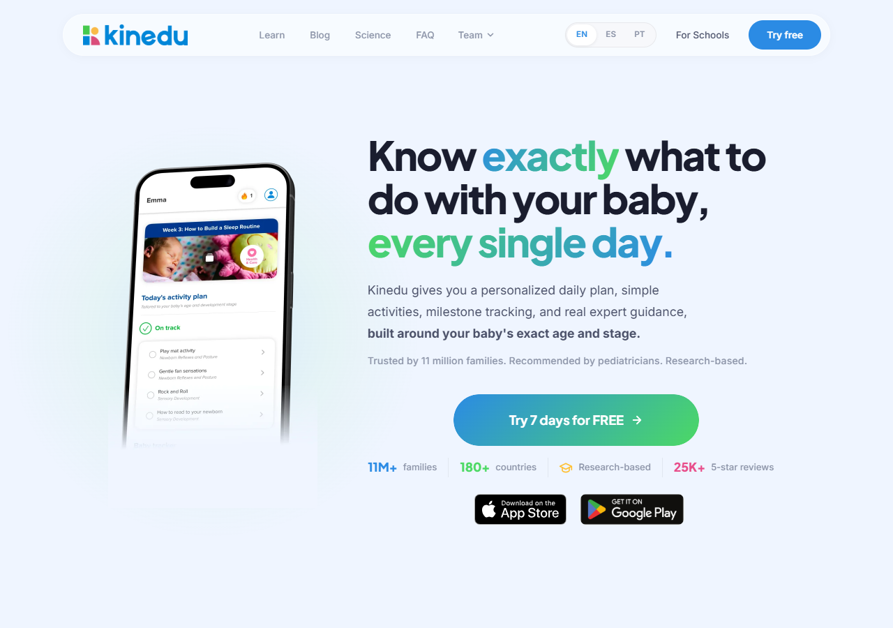
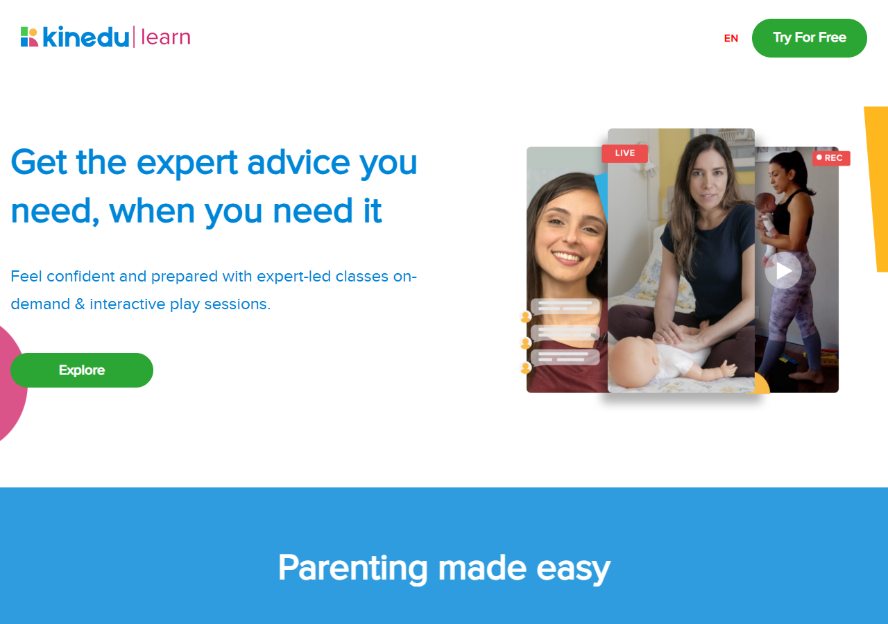
벤치마크 구조를 FlowMe 사용 흐름에 대입한 개념 UI입니다. 실제 앱 화면이나 원문 콘텐츠 복제가 아닙니다.
아이 월령에 맞는 오늘 놀이를 바로 찾고 싶을 때
계획 생성에 필요한 값만 먼저 정합니다.
월령·발달 단계에 맞춘 일일 놀이 계획에서 꺼낸 현재 행동
아이 월령에 맞는 오늘 놀이를 바로 찾고 싶을 때
생년월일/월령
월령·발달 단계에 맞춘 일일 놀이 계획
오늘 추천 활동 한 개 실행
활동 완료와 발달 관찰에 따라 추천이 이어진다.
월령·발달 단계에 맞춘 일일 놀이 계획
오늘: 오늘 추천 활동 한 개 실행
수정: 활동 완료와 발달 관찰에 따라 추천이 이어진다.
공식 수업 사이트가 포럼·채팅·라이브 세션과 가족 커뮤니티를 안내하고, 공식 사이트에 부모 후기가 노출된다.
전문가 라이브 세션은 확인되지만 개별 공개 답변 내역은 로그인 없이 확인하지 못했다.Premium 구독과 전문가 강의가 확인되며 공식 사이트는 1,100만 가족 이용을 주장한다.
실제 제휴 의사·전환율·매출 기여는 확인하지 않았으며 사업 가설로 승격하지 않는다.공개 육아 활동 제작자의 월령·목표별 묶음을 2주 루틴으로 일정화하고 원문으로 돌려보낼 수 있다.
Kinedu은(는) '아이 프로필 → 일일 계획 → 활동 영상 → 발달 진도' 흐름으로 다음 행동을 이어 준다. 오늘 한 활동에 집중하게 해 부모의 선택 부담을 줄인다. (9/10)
최초 입력은 생년월일/월령, 발달 관심 영역이며 필수 1개다. 생년월일 하나가 추천 정확도에 직접 연결된다. (9/10)
입력 뒤 '월령·발달 단계에 맞춘 일일 놀이 계획'가 생성된다. 일일 활동과 발달 목표의 관계가 명확하다. (9/10)
실행 화면의 다음 행동은 '오늘 추천 활동 한 개 실행'이다. 영상 활동을 즉시 시작할 수 있다. (9/10)
활동 완료와 발달 관찰에 따라 추천이 이어진다. 진도 기반 적응은 강하지만 계산 규칙은 서비스 고유 영역이다. (8/10)
0~6세 활동, 발달 마일스톤, 강의, 전문가 콘텐츠가 연결된다. 활동 라이브러리와 전문가 콘텐츠가 매우 깊다. (10/10)
Premium 구독과 전문가 강의가 확인되며 공식 사이트는 1,100만 가족 이용을 주장한다. 제작자·전문가 파트너 가능성은 있으나 공개 전환 권리는 별도 협의가 필요하다. (9/10)
활동 영상과 발달 추적은 앱에 묶여 있고 외부 실행표 이식은 제한적이다. FlowMe는 링크 중심 루틴·캘린더 이식에 기회가 있다. 점수가 높을수록 외부 도구로 옮길 여지가 크다. (7/10)
공개 육아 활동 제작자의 월령·목표별 묶음을 2주 루틴으로 일정화하고 원문으로 돌려보낼 수 있다. 발달 평가나 진단 기능은 범위 밖이다. (8/10)
공식·지원·앱스토어 근거 2건을 2026-07-28 확인했다. 공식 서비스 기능과 공개 이용 규모를 확인했으나 개인화 결과는 직접 검증하지 않았다. (8/10)
공개 웹·공식 지원 문서·앱스토어 설명만 확인했다. 로그인 후 개인화 결과는 in_app_verified가 아니다.
짧게라도 매일 언어 학습을 이어가고 싶을 때
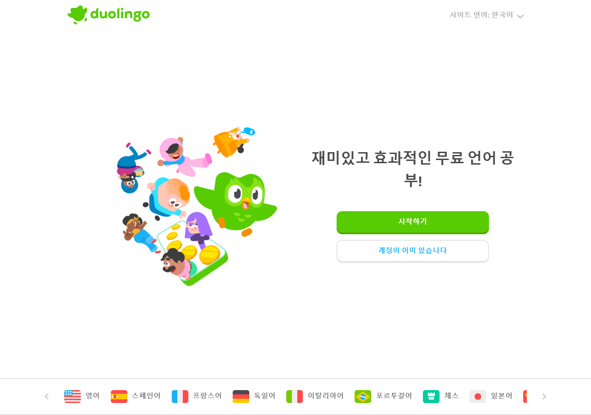
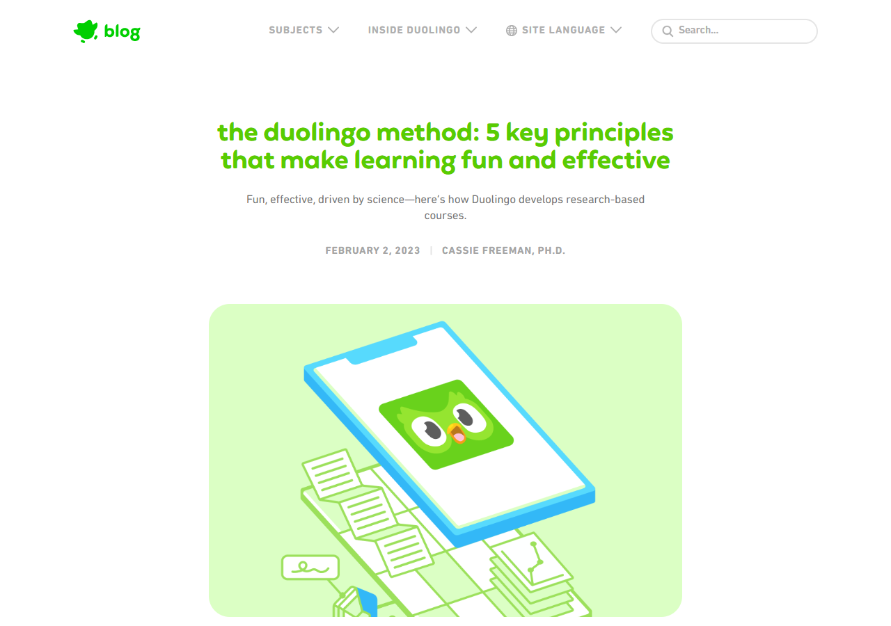
벤치마크 구조를 FlowMe 사용 흐름에 대입한 개념 UI입니다. 실제 앱 화면이나 원문 콘텐츠 복제가 아닙니다.
짧게라도 매일 언어 학습을 이어가고 싶을 때
계획 생성에 필요한 값만 먼저 정합니다.
수준별 학습 경로와 다음 레슨에서 꺼낸 현재 행동
짧게라도 매일 언어 학습을 이어가고 싶을 때
학습 언어
수준별 학습 경로와 다음 레슨
경로에 표시된 다음 레슨 시작
진도와 정답 결과에 따라 다음 문제와 복습이 조정된다.
수준별 학습 경로와 다음 레슨
오늘: 경로에 표시된 다음 레슨 시작
수정: 진도와 정답 결과에 따라 다음 문제와 복습이 조정된다.
공식 블로그가 설문·인터뷰·실험을 통해 학습자 피드백을 기능에 반영한다고 설명한다.
개별 제작자 답변보다 제품 연구·실험 루프에 가까운 구조다.광고·구독·인증 시험 등 명확한 제품 수익 구조가 있다.
실제 제휴 의사·전환율·매출 기여는 확인하지 않았으며 사업 가설로 승격하지 않는다.개별 강의·공개 학습 시리즈를 회차 큐와 오늘 학습으로 바꾸는 구조는 차용할 수 있다.
Duolingo은(는) '목표 언어 선택 → 학습 경로 → 짧은 레슨 → 진도·다음 레슨' 흐름으로 다음 행동을 이어 준다. 경로가 다음 레슨을 강하게 제한해 선택 부담이 매우 낮다. (10/10)
최초 입력은 학습 언어, 현재 수준, 일일 목표이며 필수 1개다. 언어 하나로 시작할 수 있다. (9/10)
입력 뒤 '수준별 학습 경로와 다음 레슨'가 생성된다. 경로와 현재 위치가 명확하다. (9/10)
실행 화면의 다음 행동은 '경로에 표시된 다음 레슨 시작'이다. 단일 레슨 CTA가 선명하다. (10/10)
진도와 정답 결과에 따라 다음 문제와 복습이 조정된다. 적응형 문항은 고유 학습 엔진이므로 FlowMe 범위가 아니다. (8/10)
언어별 방대한 레슨·스토리·연습 콘텐츠가 있다. 서비스 자체 콘텐츠는 깊지만 외부 제작자 콘텐츠 공급망과는 다르다. (10/10)
광고·구독·인증 시험 등 명확한 제품 수익 구조가 있다. 직접 경쟁 학습 제품이므로 파트너보다 로직 벤치마크에 가깝다. (8/10)
진도·문항·연속 학습은 폐쇄형이며 외부 내보내기 가치가 낮다. 이식성 간극은 있으나 원문 강의 큐에만 적용 가능하다. 점수가 높을수록 외부 도구로 옮길 여지가 크다. (4/10)
개별 강의·공개 학습 시리즈를 회차 큐와 오늘 학습으로 바꾸는 구조는 차용할 수 있다. 학습 엔진을 복제하지 않고 공개 커리큘럼의 실행 껍질만 제공한다. (6/10)
공식·지원·앱스토어 근거 2건을 2026-07-28 확인했다. 공식 학습 페이지와 방법론 문서를 확인했다. 개인 레슨 적응 결과는 미확인이다. (8/10)
공개 웹·공식 지원 문서·앱스토어 설명만 확인했다. 로그인 후 개인화 결과는 in_app_verified가 아니다.
목표 금액을 언제까지 모을지 월별 실행액으로 바꾸고 싶을 때
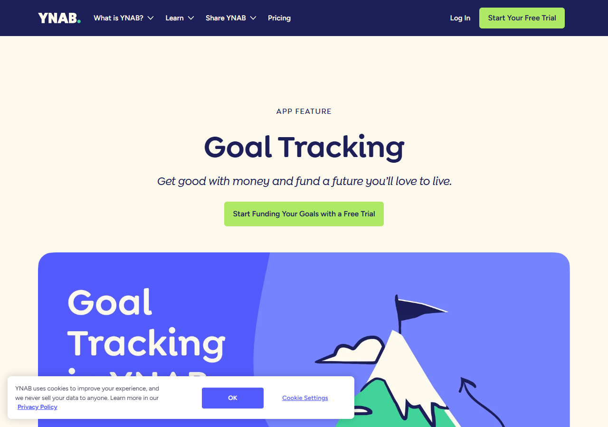
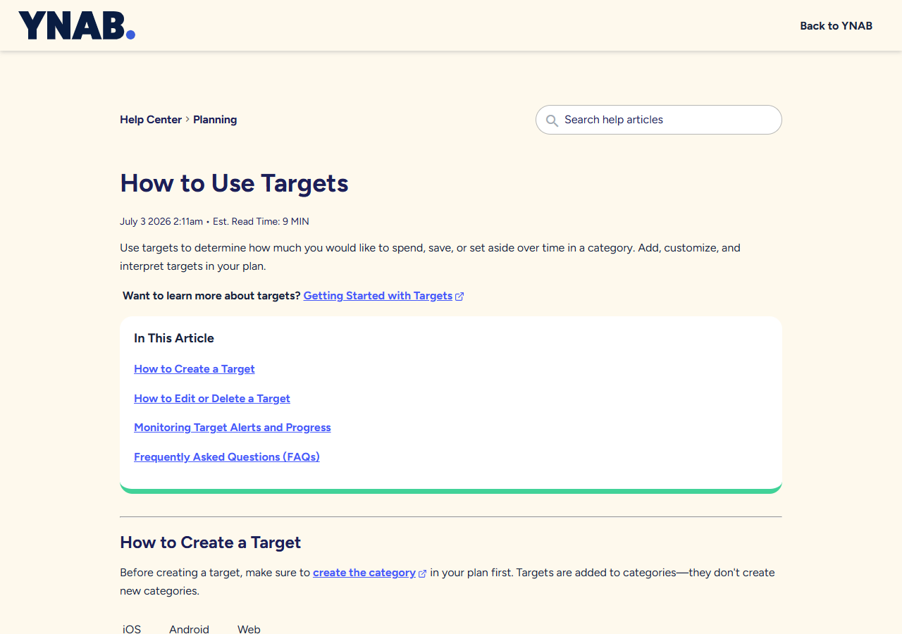
벤치마크 구조를 FlowMe 사용 흐름에 대입한 개념 UI입니다. 실제 앱 화면이나 원문 콘텐츠 복제가 아닙니다.
목표 금액을 언제까지 모을지 월별 실행액으로 바꾸고 싶을 때
계획 생성에 필요한 값만 먼저 정합니다.
주·월·연 단위 필요 저축액과 진도에서 꺼낸 현재 행동
목표 금액을 언제까지 모을지 월별 실행액으로 바꾸고 싶을 때
목표 금액 · 목표일
주·월·연 단위 필요 저축액과 진도
이번 달 목표 카테고리에 필요한 금액 배정
목표일·금액을 바꾸거나 목표를 잠시 미룰 수 있다.
주·월·연 단위 필요 저축액과 진도
오늘: 이번 달 목표 카테고리에 필요한 금액 배정
수정: 목표일·금액을 바꾸거나 목표를 잠시 미룰 수 있다.
공식 지원 문서와 교육 콘텐츠가 깊지만 이번 근거에서는 공개 사용자 대화가 직접 연결되지 않았다.
지원·교육 응답은 존재하나 공개 댓글 기반 상호작용은 unknown이다.구독형 예산 제품과 교육 콘텐츠가 강하게 연결된다.
실제 제휴 의사·전환율·매출 기여는 확인하지 않았으며 사업 가설로 승격하지 않는다.재무 계정 연동 없이도 공개 저축 챌린지·구매 준비표를 목표일과 체크 일정으로 바꿀 수 있다.
YNAB은(는) '목표 금액·기한 → 주기별 필요액 → 이번 달 배정 → 진도·다음 배정' 흐름으로 다음 행동을 이어 준다. 목표를 이번 달 배정 행동으로 연결한다. (8/10)
최초 입력은 목표 금액, 목표일이며 필수 2개다. 금액과 날짜 두 값이 결과 계산에 직접 필요하다. (8/10)
입력 뒤 '주·월·연 단위 필요 저축액과 진도'가 생성된다. 필요액이 즉시 계산되어 결과가 명확하다. (10/10)
실행 화면의 다음 행동은 '이번 달 목표 카테고리에 필요한 금액 배정'이다. 다음 배정 행동이 구체적이다. (8/10)
목표일·금액을 바꾸거나 목표를 잠시 미룰 수 있다. 목표 변경과 보류가 자연스럽다. (9/10)
예산, 지출, 목표, 리포트, 교육 콘텐츠가 연결된다. 재무 교육과 목표 유형이 깊다. (9/10)
구독형 예산 제품과 교육 콘텐츠가 강하게 연결된다. 계좌·예산 제품은 직접 경쟁 경계이며 공개 교육 콘텐츠만 참고 가능하다. (8/10)
금융 계좌·예산 데이터는 앱에 묶이지만 목표 계획은 시트·캘린더로 옮길 여지가 있다. 목표 일정의 외부 이식성은 높다. 점수가 높을수록 외부 도구로 옮길 여지가 크다. (7/10)
재무 계정 연동 없이도 공개 저축 챌린지·구매 준비표를 목표일과 체크 일정으로 바꿀 수 있다. 계좌 연결·예산 원장은 만들지 않는다. (7/10)
공식·지원·앱스토어 근거 2건을 2026-07-28 확인했다. 공식 기능과 지원 문서를 확인했으며 계좌 연동은 직접 시험하지 않았다. (9/10)
공개 웹·공식 지원 문서·앱스토어 설명만 확인했다. 로그인 후 개인화 결과는 in_app_verified가 아니다.
레이스·거리 목표에 맞춘 주간 러닝 계획이 필요할 때
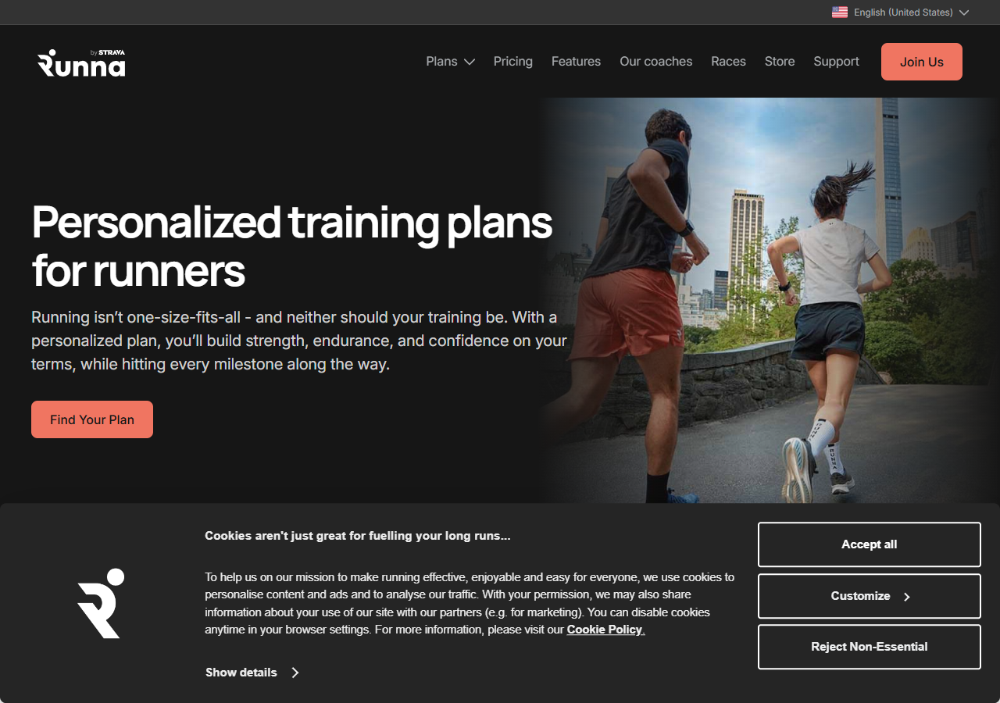
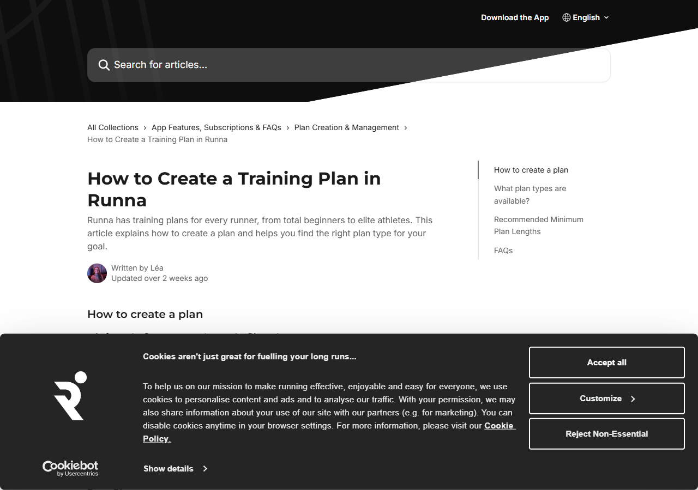
벤치마크 구조를 FlowMe 사용 흐름에 대입한 개념 UI입니다. 실제 앱 화면이나 원문 콘텐츠 복제가 아닙니다.
레이스·거리 목표에 맞춘 주간 러닝 계획이 필요할 때
계획 생성에 필요한 값만 먼저 정합니다.
목표일에 맞춘 주차별 러닝·근력 훈련 계획에서 꺼낸 현재 행동
레이스·거리 목표에 맞춘 주간 러닝 계획이 필요할 때
목표 유형/레이스 · 현재 능력·주간 거리 · 주당 러닝 횟수
목표일에 맞춘 주차별 러닝·근력 훈련 계획
오늘 배정된 러닝 세션 시작
일정·목표·운동 요일을 관리 화면에서 바꾸고 계획을 조정한다.
목표일에 맞춘 주차별 러닝·근력 훈련 계획
오늘: 오늘 배정된 러닝 세션 시작
수정: 일정·목표·운동 요일을 관리 화면에서 바꾸고 계획을 조정한다.
공식 도움말과 코칭 콘텐츠는 확인했지만 사용자 질문·코치 답변의 공개 표면은 확인하지 못했다.
앱 안 코칭 또는 지원 여부는 in-app 미검증이다.구독 코칭과 웨어러블 연동이 핵심 제품 가치다.
실제 제휴 의사·전환율·매출 기여는 확인하지 않았으며 사업 가설로 승격하지 않는다.공개 코치의 기간형 프로그램을 목표일·요일만 받아 회차 일정과 원문 링크로 배치할 수 있다.
Runna은(는) '목표·수준·일정 → 훈련 계획 미리보기 → 오늘 운동 → 기록·계획 조정' 흐름으로 다음 행동을 이어 준다. 계획 미리보기와 오늘 운동이 자연스럽게 이어진다. (10/10)
최초 입력은 목표 유형/레이스, 현재 능력·주간 거리, 주당 러닝 횟수이며 필수 3개다. 입력은 3개 이상이지만 안전한 훈련 계획에 직접 필요하다. (7/10)
입력 뒤 '목표일에 맞춘 주차별 러닝·근력 훈련 계획'가 생성된다. 주차·세션·목표일 관계가 매우 선명하다. (10/10)
실행 화면의 다음 행동은 '오늘 배정된 러닝 세션 시작'이다. 오늘 세션 시작이 명확하다. (10/10)
일정·목표·운동 요일을 관리 화면에서 바꾸고 계획을 조정한다. 일정 변경과 재계획 UX가 강하다. (9/10)
5K부터 울트라, 재활 복귀, 근력 등 계획 유형이 깊다. 거리·수준·목표별 프로그램 변형이 매우 깊다. (10/10)
구독 코칭과 웨어러블 연동이 핵심 제품 가치다. 전문 코칭·웨어러블 기능은 복제하지 않고 공개 코치 콘텐츠와 제휴 기회를 본다. (8/10)
운동 세션은 캘린더·웨어러블과 연결되지만 코칭 계산은 앱에 묶인다. 캘린더·체크리스트 이식성이 높아 FlowMe 차별점과 맞는다. 점수가 높을수록 외부 도구로 옮길 여지가 크다. (7/10)
공개 코치의 기간형 프로그램을 목표일·요일만 받아 회차 일정과 원문 링크로 배치할 수 있다. 훈련 강도 계산·건강 판단은 원문 제작자에게 남긴다. (9/10)
공식·지원·앱스토어 근거 2건을 2026-07-28 확인했다. 공식 계획 목록과 계획 생성 지원 문서를 확인했다. (9/10)
공개 웹·공식 지원 문서·앱스토어 설명만 확인했다. 로그인 후 개인화 결과는 in_app_verified가 아니다.
저장한 장소와 예약을 한 일정으로 정리하고 싶을 때
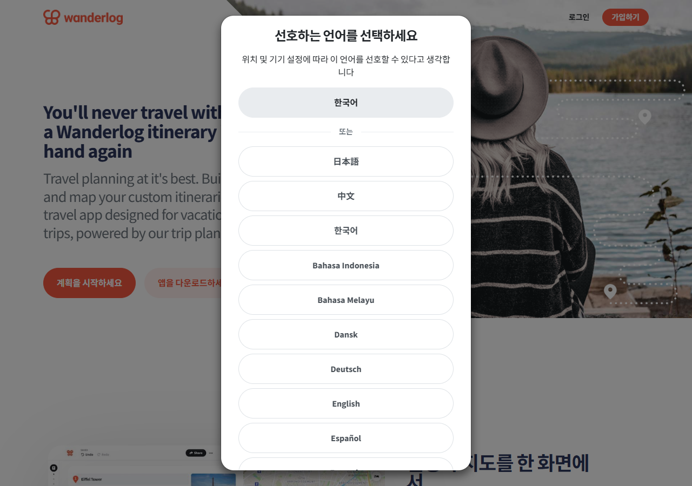
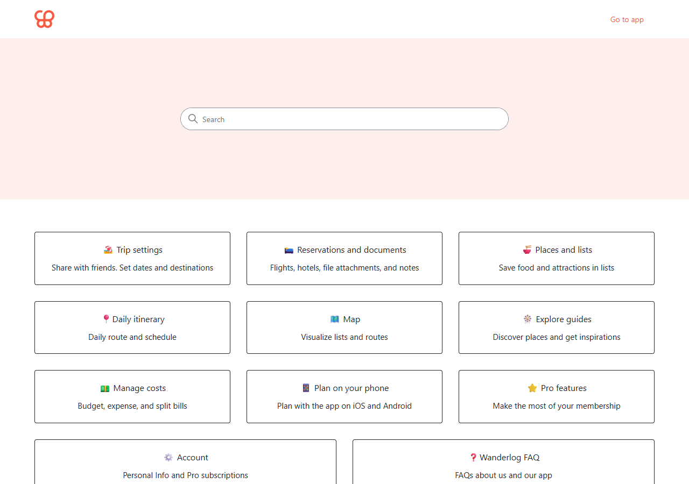
벤치마크 구조를 FlowMe 사용 흐름에 대입한 개념 UI입니다. 실제 앱 화면이나 원문 콘텐츠 복제가 아닙니다.
저장한 장소와 예약을 한 일정으로 정리하고 싶을 때
계획 생성에 필요한 값만 먼저 정합니다.
날짜별 여행 일정과 지도 동선에서 꺼낸 현재 행동
저장한 장소와 예약을 한 일정으로 정리하고 싶을 때
여행지/여행 기간
날짜별 여행 일정과 지도 동선
오늘 일정의 다음 장소 확인·이동
장소를 드래그해 날짜·순서를 바꾸고 동선을 다시 본다.
날짜별 여행 일정과 지도 동선
오늘: 오늘 일정의 다음 장소 확인·이동
수정: 장소를 드래그해 날짜·순서를 바꾸고 동선을 다시 본다.
공동 편집과 여행 계획 공유 기능이 공식 도움말에 존재한다.
여행 제작자와 사용자의 공개 질문·답변 구조는 확인하지 못했다.Pro 구독과 여행 예약·추천 연결이 확인된다.
실제 제휴 의사·전환율·매출 기여는 확인하지 않았으며 사업 가설로 승격하지 않는다.공개 여행 코스·블로그 장소 목록을 기준일과 날짜별 실행 일정으로 바꾸고 원문 링크를 보존할 수 있다.
Wanderlog은(는) '장소·예약 모으기 → 일정·지도 생성 → 날짜별 계획 → 현지 다음 장소' 흐름으로 다음 행동을 이어 준다. 여행 중 다음 장소가 자연스럽게 드러난다. (9/10)
최초 입력은 여행지/여행 기간, 가고 싶은 장소이며 필수 1개다. 여행지와 기간은 일정 생성에 직접 필요하다. (8/10)
입력 뒤 '날짜별 여행 일정과 지도 동선'가 생성된다. 일정과 지도라는 결과물이 선명하다. (9/10)
실행 화면의 다음 행동은 '오늘 일정의 다음 장소 확인·이동'이다. 다음 장소·예약 행동이 구체적이다. (9/10)
장소를 드래그해 날짜·순서를 바꾸고 동선을 다시 본다. 순서·날짜 수정이 직관적이다. (10/10)
여행지 가이드·추천 장소·협업 일정·예약 정보로 확장된다. 장소 콘텐츠는 깊지만 실제 코스 품질은 원문에 좌우된다. (9/10)
Pro 구독과 여행 예약·추천 연결이 확인된다. 예약 연결은 전문 플랫폼 영역이며 공개 creator 코스는 링크 기반 기회가 있다. (8/10)
지도·협업은 앱 강점이지만 일정은 캘린더·시트로 이식 가능하다. 캘린더·시트 내보내기 가치가 높다. 점수가 높을수록 외부 도구로 옮길 여지가 크다. (6/10)
공개 여행 코스·블로그 장소 목록을 기준일과 날짜별 실행 일정으로 바꾸고 원문 링크를 보존할 수 있다. 지도 최적화·예약 엔진은 만들지 않는다. (8/10)
공식·지원·앱스토어 근거 2건을 2026-07-28 확인했다. 공식 제품과 도움말을 확인했으나 실제 협업·AI 일정 품질은 미확인이다. (8/10)
공개 웹·공식 지원 문서·앱스토어 설명만 확인했다. 로그인 후 개인화 결과는 in_app_verified가 아니다.
결혼일까지 해야 할 준비를 빠짐없이 일정화하고 싶을 때
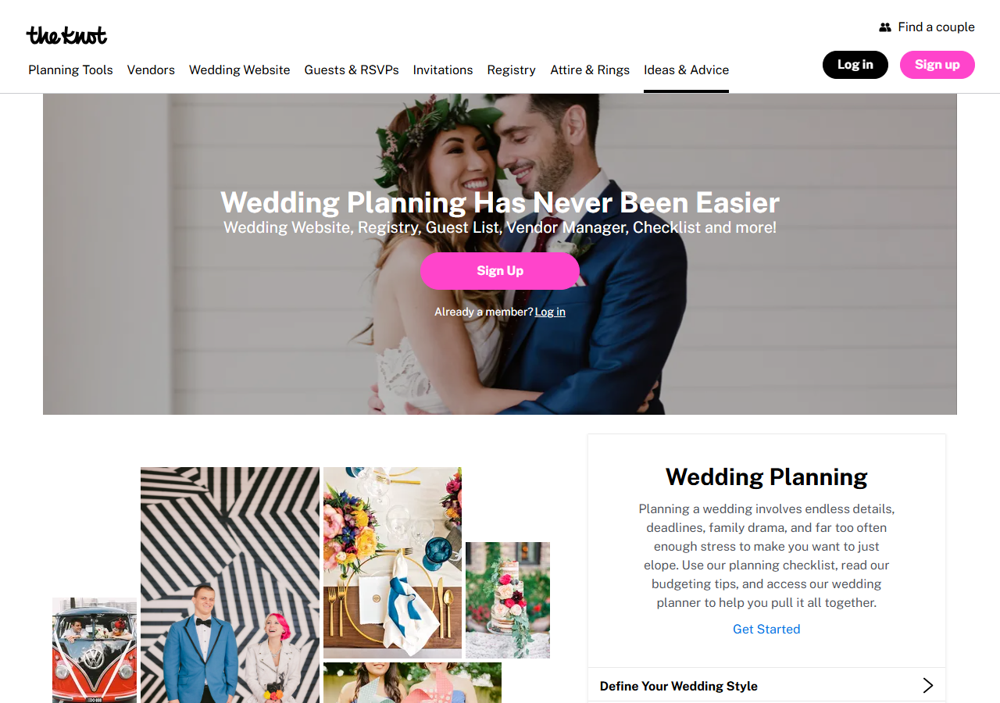
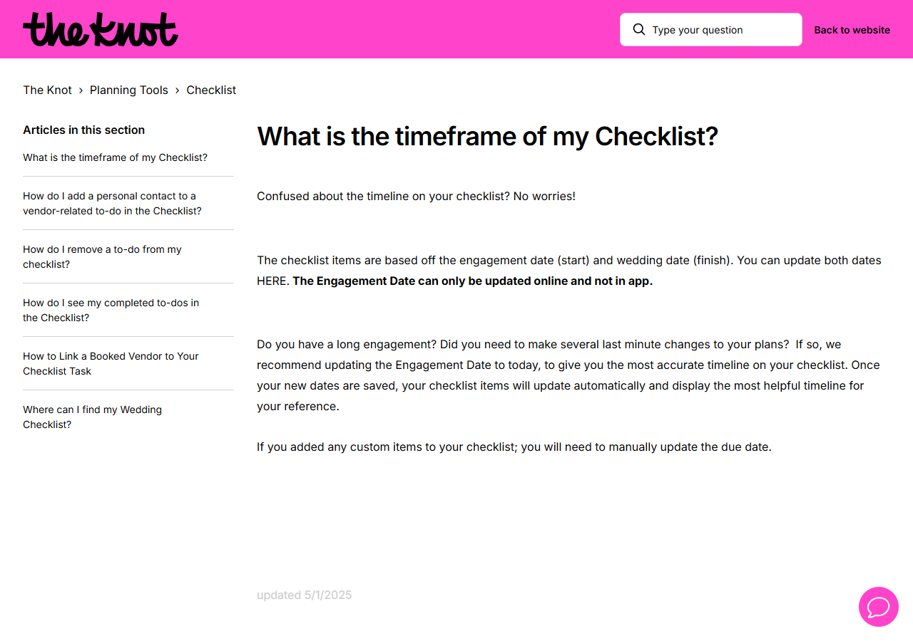
벤치마크 구조를 FlowMe 사용 흐름에 대입한 개념 UI입니다. 실제 앱 화면이나 원문 콘텐츠 복제가 아닙니다.
결혼일까지 해야 할 준비를 빠짐없이 일정화하고 싶을 때
계획 생성에 필요한 값만 먼저 정합니다.
결혼일 기준 개인화 준비 체크리스트와 업체·예산 보드에서 꺼낸 현재 행동
결혼일까지 해야 할 준비를 빠짐없이 일정화하고 싶을 때
결혼일
결혼일 기준 개인화 준비 체크리스트와 업체·예산 보드
마감이 가까운 결혼 준비 항목 처리
결혼일이 바뀌면 체크리스트 기한이 자동 조정되고 항목을 추가·삭제할 수 있다.
결혼일 기준 개인화 준비 체크리스트와 업체·예산 보드
오늘: 마감이 가까운 결혼 준비 항목 처리
수정: 결혼일이 바뀌면 체크리스트 기한이 자동 조정되고 항목을 추가·삭제할 수 있다.
공식 앱 페이지에 커플 후기가 있고 앱이 업체 검색·메시지를 제공한다고 설명한다.
업체 메시지 경로는 확인되지만 실제 응답 품질과 공개성은 로그인 없이 검증하지 않았다.업체 추천·광고·레지스트리·브랜드 제휴가 실행 체크리스트와 직접 연결된다.
실제 제휴 의사·전환율·매출 기여는 확인하지 않았으며 사업 가설로 승격하지 않는다.제작자 결혼 체크리스트를 기준일 하나로 일정화하고 원문·업체 링크를 보존하는 강한 콘텐츠 기회가 있다.
The Knot은(는) '결혼일·지역·예산 → 개인화 체크리스트 → 이번 주 할 일 → 완료·업체 연결' 흐름으로 다음 행동을 이어 준다. D-day와 임박 항목으로 선택 부담을 줄인다. (10/10)
최초 입력은 결혼일, 지역, 예산/하객 수이며 필수 1개다. 결혼일 하나로 핵심 결과를 만들 수 있다. (9/10)
입력 뒤 '결혼일 기준 개인화 준비 체크리스트와 업체·예산 보드'가 생성된다. 타임라인과 준비 항목이 명확하다. (10/10)
실행 화면의 다음 행동은 '마감이 가까운 결혼 준비 항목 처리'이다. 가까운 마감 항목이 첫 행동이 된다. (9/10)
결혼일이 바뀌면 체크리스트 기한이 자동 조정되고 항목을 추가·삭제할 수 있다. 기준일 변경 시 일괄 재계산이 강하다. (10/10)
체크리스트, 업체, 예산, 하객, 청첩장, 레지스트리가 연결된다. 준비 전 과정과 업체 콘텐츠가 매우 깊다. (10/10)
업체 추천·광고·레지스트리·브랜드 제휴가 실행 체크리스트와 직접 연결된다. 제작자·업체·플랫폼의 수익 연결이 가장 명확한 사례다. (10/10)
일정과 체크는 이식 가능하지만 업체 데이터·마켓플레이스는 플랫폼 안에 남는다. 캘린더·체크리스트 이식성에서 FlowMe 가치가 크다. 점수가 높을수록 외부 도구로 옮길 여지가 크다. (7/10)
제작자 결혼 체크리스트를 기준일 하나로 일정화하고 원문·업체 링크를 보존하는 강한 콘텐츠 기회가 있다. 업체 마켓플레이스는 만들지 않고 출처 유입을 보존한다. (10/10)
공식·지원·앱스토어 근거 2건을 2026-07-28 확인했다. 공식 앱 페이지와 체크리스트 도움말을 확인했다. (9/10)
공개 웹·공식 지원 문서·앱스토어 설명만 확인했다. 로그인 후 개인화 결과는 in_app_verified가 아니다.
무엇을 먹을지 정하고 장보기부터 조리까지 한 번에 이어가고 싶을 때
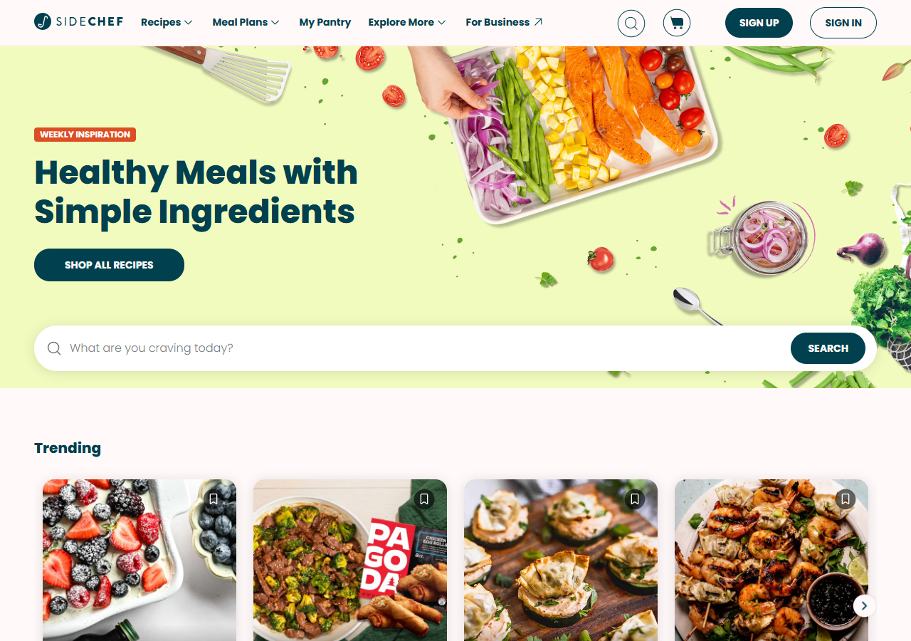
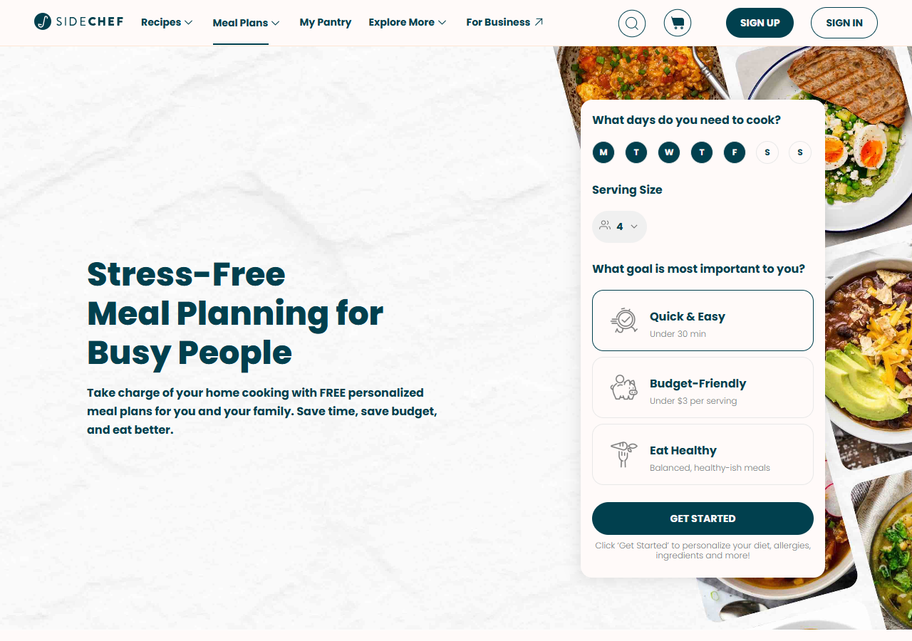
벤치마크 구조를 FlowMe 사용 흐름에 대입한 개념 UI입니다. 실제 앱 화면이나 원문 콘텐츠 복제가 아닙니다.
무엇을 먹을지 정하고 장보기부터 조리까지 한 번에 이어가고 싶을 때
계획 생성에 필요한 값만 먼저 정합니다.
개인화 식단, 통합 장보기 목록, 단계별 조리 세션에서 꺼낸 현재 행동
무엇을 먹을지 정하고 장보기부터 조리까지 한 번에 이어가고 싶을 때
식단 기간/식사 수
개인화 식단, 통합 장보기 목록, 단계별 조리 세션
오늘 식사의 첫 조리 단계 시작
식단에서 레시피를 교체하면 장보기 목록이 갱신된다.
개인화 식단, 통합 장보기 목록, 단계별 조리 세션
오늘: 오늘 식사의 첫 조리 단계 시작
수정: 식단에서 레시피를 교체하면 장보기 목록이 갱신된다.
레시피·수업·브랜드 콘텐츠와 비즈니스 파트너 진입점이 공개돼 있다.
레시피별 질문·답변 또는 제작자 응답 내역은 이번 공개 화면에서 검증하지 않았다.Premium 수업, 장보기 주문, 스마트 주방·브랜드 파트너 연결이 확인된다.
실제 제휴 의사·전환율·매출 기여는 확인하지 않았으며 사업 가설로 승격하지 않는다.제작자 레시피 묶음을 식단→장보기→오늘 조리로 연결하면서 원문 방문을 늘릴 수 있다.
SideChef은(는) '레시피 선택 → 주간 식단 → 장보기 목록 → 단계별 조리' 흐름으로 다음 행동을 이어 준다. 계획부터 조리까지 끊김이 적다. (10/10)
최초 입력은 식단 기간/식사 수, 선호·제한이며 필수 1개다. 기간 하나로 시작하고 선호는 후속으로 받을 수 있다. (8/10)
입력 뒤 '개인화 식단, 통합 장보기 목록, 단계별 조리 세션'가 생성된다. 식단·장보기·조리 결과물이 서로 연결된다. (10/10)
실행 화면의 다음 행동은 '오늘 식사의 첫 조리 단계 시작'이다. 오늘 레시피의 첫 단계가 분명하다. (10/10)
식단에서 레시피를 교체하면 장보기 목록이 갱신된다. 레시피 교체와 장보기 갱신이 자연스럽다. (9/10)
공식 사이트는 11,000개 이상 무료 레시피와 수업·기기 연동을 안내한다. 레시피·수업·브랜드 콘텐츠가 매우 깊다. (10/10)
Premium 수업, 장보기 주문, 스마트 주방·브랜드 파트너 연결이 확인된다. 제작자와 식재료·기기 브랜드가 Flow를 홍보할 이유가 있다. (10/10)
레시피 링크·식단·장보기는 이식 가능하지만 조리 모드와 주문은 서비스 안에 남는다. 캘린더·체크리스트·시트로 옮길 가치가 높다. 점수가 높을수록 외부 도구로 옮길 여지가 크다. (8/10)
제작자 레시피 묶음을 식단→장보기→오늘 조리로 연결하면서 원문 방문을 늘릴 수 있다. 레시피 전문을 복제하지 않고 실행 제목·링크·최소 재료 메타만 사용한다. (10/10)
공식·지원·앱스토어 근거 2건을 2026-07-28 확인했다. 공식 서비스와 식단 플래너 페이지를 확인했다. (9/10)
공개 웹·공식 지원 문서·앱스토어 설명만 확인했다. 로그인 후 개인화 결과는 in_app_verified가 아니다.
여러 채용 공고의 지원 상태와 다음 행동을 놓치지 않고 싶을 때
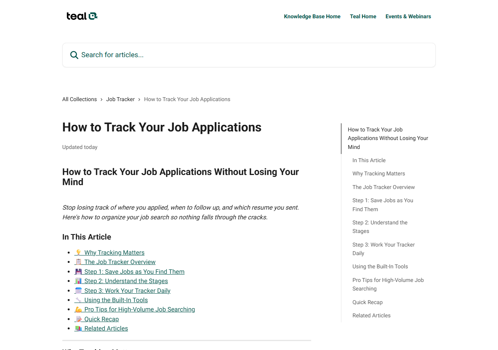
벤치마크 구조를 FlowMe 사용 흐름에 대입한 개념 UI입니다. 실제 앱 화면이나 원문 콘텐츠 복제가 아닙니다.
여러 채용 공고의 지원 상태와 다음 행동을 놓치지 않고 싶을 때
계획 생성에 필요한 값만 먼저 정합니다.
지원 공고 보드, 단계, 후속 일정과 다음 행동에서 꺼낸 현재 행동
여러 채용 공고의 지원 상태와 다음 행동을 놓치지 않고 싶을 때
채용 공고 URL
지원 공고 보드, 단계, 후속 일정과 다음 행동
가장 가까운 후속 일정의 지원 행동 수행
상태를 이동하고 후속 날짜·메모를 수정한다.
지원 공고 보드, 단계, 후속 일정과 다음 행동
오늘: 가장 가까운 후속 일정의 지원 행동 수행
수정: 상태를 이동하고 후속 날짜·메모를 수정한다.
공식 How it works 페이지에 사용자 후기가 노출되고 지원 지식베이스가 최신 사용법을 제공한다.
개별 커리어 제작자와 사용자의 공개 답변 구조는 확인하지 못했다.Teal+ 구독과 커리어 도구·교육 콘텐츠가 확인된다.
실제 제휴 의사·전환율·매출 기여는 확인하지 않았으며 사업 가설로 승격하지 않는다.공개 직무별 지원 체크리스트를 공고 URL·목표일만 받아 상태형 Flow로 실행할 수 있다.
Teal은(는) '공고 저장 → 지원 단계 → 후속 날짜·메모 → 오늘 다음 행동' 흐름으로 다음 행동을 이어 준다. 지원 단계와 후속 날짜가 다음 행동을 만든다. (9/10)
최초 입력은 채용 공고 URL, 현재 지원 단계이며 필수 1개다. 공고 URL 하나로 시작한 뒤 상태를 보완할 수 있다. (10/10)
입력 뒤 '지원 공고 보드, 단계, 후속 일정과 다음 행동'가 생성된다. 지원 보드와 후속 일정이 명확하다. (9/10)
실행 화면의 다음 행동은 '가장 가까운 후속 일정의 지원 행동 수행'이다. 기한이 있는 후속 행동이 선명하다. (10/10)
상태를 이동하고 후속 날짜·메모를 수정한다. 상태 이동과 보류가 자연스럽다. (10/10)
공고 추적, 이력서, 키워드 매칭, 연락처, 커리어 교육이 연결된다. 지원 전 과정 콘텐츠와 도구가 깊다. (9/10)
Teal+ 구독과 커리어 도구·교육 콘텐츠가 확인된다. 커리어 제작자·코치의 체크리스트와 제휴 가능성이 있으나 확인된 계약은 없다. (8/10)
보드·일정은 이식 가능하지만 공고 분석·이력서 최적화는 전문 기능이다. 체크리스트·시트·캘린더 이식성이 높다. 점수가 높을수록 외부 도구로 옮길 여지가 크다. (8/10)
공개 직무별 지원 체크리스트를 공고 URL·목표일만 받아 상태형 Flow로 실행할 수 있다. 이력서 AI 분석을 만들지 않고 실행 순서와 출처를 제공한다. (9/10)
공식·지원·앱스토어 근거 2건을 2026-07-28 확인했다. 공식 지원 문서와 제품 페이지를 확인했다. (9/10)
공개 웹·공식 지원 문서·앱스토어 설명만 확인했다. 로그인 후 개인화 결과는 in_app_verified가 아니다.
식물마다 다른 물주기·비료·분갈이 시점을 놓치지 않고 싶을 때
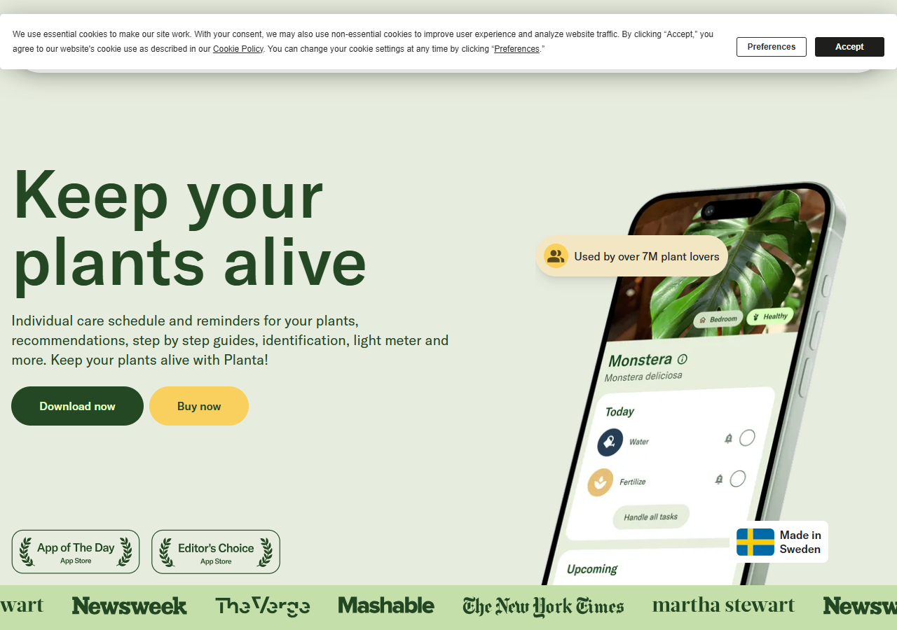
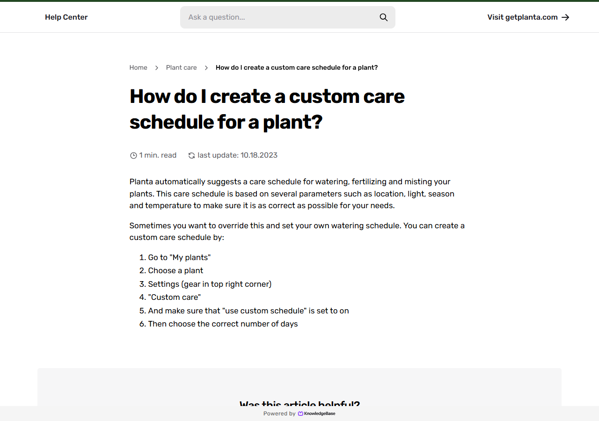
벤치마크 구조를 FlowMe 사용 흐름에 대입한 개념 UI입니다. 실제 앱 화면이나 원문 콘텐츠 복제가 아닙니다.
식물마다 다른 물주기·비료·분갈이 시점을 놓치지 않고 싶을 때
계획 생성에 필요한 값만 먼저 정합니다.
식물별 물주기·비료·분무·분갈이 관리 일정에서 꺼낸 현재 행동
식물마다 다른 물주기·비료·분갈이 시점을 놓치지 않고 싶을 때
식물 종류 · 위치·빛·화분 환경
식물별 물주기·비료·분무·분갈이 관리 일정
오늘 기한이 된 식물 관리 작업 완료
사용자 맞춤 일정을 만들거나 환경·작업 주기를 바꾼다.
식물별 물주기·비료·분무·분갈이 관리 일정
오늘: 오늘 기한이 된 식물 관리 작업 완료
수정: 사용자 맞춤 일정을 만들거나 환경·작업 주기를 바꾼다.
공식 사이트가 Community와 Care Share 기능을 안내한다.
전문가·판매자 응답 구조와 공개 대화 품질은 확인하지 못했다.Premium 구독과 식물 관리 콘텐츠가 확인되며 공식 사이트는 700만 사용자를 주장한다.
실제 제휴 의사·전환율·매출 기여는 확인하지 않았으며 사업 가설로 승격하지 않는다.전문가·식물 판매자의 공개 관리표를 식물 종류와 시작일만 받아 반복 Flow로 제공할 수 있다.
Planta은(는) '식물 등록·환경 → 개별 관리 일정 → 오늘 관리 → 완료·다음 일정' 흐름으로 다음 행동을 이어 준다. 오늘 관리 작업이 식물별로 명확하다. (9/10)
최초 입력은 식물 종류, 위치·빛·화분 환경이며 필수 2개다. 식물과 환경 입력은 주기 정확도에 필요하다. (7/10)
입력 뒤 '식물별 물주기·비료·분무·분갈이 관리 일정'가 생성된다. 작업 종류와 다음 날짜가 선명하다. (9/10)
실행 화면의 다음 행동은 '오늘 기한이 된 식물 관리 작업 완료'이다. 오늘 물주기 등 한 행동이 보인다. (9/10)
사용자 맞춤 일정을 만들거나 환경·작업 주기를 바꾼다. 맞춤 일정과 환경 수정이 가능하다. (9/10)
식물 데이터베이스, 진단, 관리 일정, 커뮤니티·Care Share가 연결된다. 식물별 콘텐츠와 관리 작업이 매우 깊다. (10/10)
Premium 구독과 식물 관리 콘텐츠가 확인되며 공식 사이트는 700만 사용자를 주장한다. 판매자·전문가가 구매 후 관리 Flow를 공유할 이유가 있다. (9/10)
식물 일정은 캘린더로 옮길 수 있지만 진단·날씨 계산은 앱 고유다. 반복 캘린더·체크리스트 이식성이 높다. 점수가 높을수록 외부 도구로 옮길 여지가 크다. (8/10)
전문가·식물 판매자의 공개 관리표를 식물 종류와 시작일만 받아 반복 Flow로 제공할 수 있다. 식물 진단·날씨 계산은 만들지 않는다. (9/10)
공식·지원·앱스토어 근거 2건을 2026-07-28 확인했다. 공식 사이트와 맞춤 일정 도움말을 확인했다. (9/10)
공개 웹·공식 지원 문서·앱스토어 설명만 확인했다. 로그인 후 개인화 결과는 in_app_verified가 아니다.
서비스 콘텐츠를 복제하지 않고, 같은 실행 패턴을 가진 공개 제작자·브랜드 원문을 찾는 방향입니다.
검색어: 주방 2주 청소 루틴 체크리스트 / 욕실 주간 청소표 / 계절별 집 관리 체크리스트
제작자: 살림 제작자 / 청소 서비스 브랜드 / 정리 전문가
경계: 작업 제목·최소 주기·출처 링크만 사용하며 유료 표 전문과 자동 최적화 규칙은 복제하지 않는다.
검색어: 12개월 아기 놀이 2주 / 유아 소근육 놀이 영상 시리즈 / 집콕 놀이 월령별
제작자: 육아 활동 제작자 / 놀이 전문가 / 교구 브랜드
경계: 발달 진단을 하지 않고 공개 활동 메타데이터와 링크만 사용한다. 유료 영상은 제휴가 필요하다.
검색어: 14일 영어 말하기 재생목록 / 기타 초보 10강 커리큘럼 / 무료 강의 주차별 계획
제작자: 교육 유튜버 / 강사 / 악기·언어 교육 브랜드
경계: 문항·자막·유료 강의 내용을 복제하지 않고 회차 제목·링크·진도만 제공한다.
검색어: 5K 8주 훈련표 공식 / 홈트 4주 재생목록 / 초보 근력 2주 프로그램
제작자: 트레이너 / 러닝 코치 / 운동 채널·브랜드
경계: 강도·부상 위험을 새로 계산하지 않고 원문 계획과 안전 안내를 그대로 추적한다.
검색어: 결혼 준비 체크리스트 D-180 / 돌잔치 준비 일정표 / 집들이 한달 전 체크리스트
제작자: 행사 제작자 / 웨딩·여행 브랜드 / 지역 전문가
경계: 업체 마켓플레이스를 만들지 않고 제작자·업체 원문 유입을 보존한다.
검색어: 일주일 식단표 장보기 리스트 / 이유식 2주 식단 재료표 / 한끼 레시피 재생목록
제작자: 요리 제작자 / 식품 브랜드 / 영양 전문가
경계: 레시피 전문을 복제하지 않고 제목·링크·최소 재료 메타만 사용한다.
검색어: 개발자 지원 체크리스트 / 면접 준비 7일 계획 / 신입 포트폴리오 제출 체크리스트
제작자: 커리어 코치 / 채용 전문가 / 교육 브랜드
경계: 공고 데이터베이스·이력서 점수 엔진을 만들지 않고 실행 항목과 출처를 제공한다.
검색어: 몬스테라 월별 관리표 / 강아지 14일 기본 훈련 / 식물 구매 후 관리 체크리스트
제작자: 식물 판매자·전문가 / 반려 훈련사 / 취미 브랜드
경계: 진단·교정 판단을 하지 않고 공개 관리 주기·훈련 순서와 전문가 링크를 보존한다.
심층 10개 외 서비스도 공식 근거와 동일한 점수 구조로 JSON 원장에 포함했습니다.
| 서비스 | 카테고리 | 실행 패턴 | 필수 입력 | 생성 결과 | 판정 |
|---|---|---|---|---|---|
| Sweepy심층 | 집·살림 | 환경 → 유지관리 | 2개 | 공간별 반복 청소 일정과 오늘 할 일 | Go |
| Tody | 집·살림 | 환경 → 유지관리 | 1개 | 공간별 청소 계획과 현재 청결 상태 | Benchmark |
| Kinedu심층 | 가족·육아 | 프로필 → 오늘 계획 | 1개 | 월령·발달 단계에 맞춘 일일 놀이 계획 | Partner |
| BabySparks | 가족·육아 | 프로필 → 오늘 계획 | 1개 | 연령별 20분 일일 발달 활동 계획 | Benchmark |
| Duolingo심층 | 공부·독서·학습 | 진도 → 다음 학습 | 1개 | 수준별 학습 경로와 다음 레슨 | Benchmark |
| Brilliant | 공부·독서·학습 | 진도 → 다음 학습 | 1개 | 관심·수준 기반 학습 경로 | Benchmark |
| Yousician | 공부·독서·학습 | 진도 → 다음 학습 | 2개 | 수준별 악기 학습 경로와 연습 과제 | Benchmark |
| YNAB심층 | 돈·행정·구매 | 목표 → 계획 | 2개 | 주·월·연 단위 필요 저축액과 진도 | Benchmark |
| TurboTax | 돈·행정·구매 | 상태 → 후속 행동 | 2개 | 개인 상황에 맞는 세금 신고 절차와 신고서 | Hold |
| Runna심층 | 건강·운동 | 목표 → 계획 | 3개 | 목표일에 맞춘 주차별 러닝·근력 훈련 계획 | Go |
| Freeletics | 건강·운동 | 프로필 → 오늘 계획 | 2개 | 개인화 Training Journey와 오늘 운동 | Benchmark |
| Nike Training Club | 건강·운동 | 콘텐츠 → 안내 세션 | 1개 | 목표별 운동 프로그램과 다음 세션 | Partner |
| Wanderlog심층 | 여행·외출·행사 | 모음 → 일정 | 1개 | 날짜별 여행 일정과 지도 동선 | Benchmark |
| TripIt | 여행·외출·행사 | 모음 → 일정 | 1개 | 항공·숙박·교통 예약이 합쳐진 여행 일정 | Benchmark |
| The Knot심층 | 여행·외출·행사 | 기준일 → 타임라인 | 1개 | 결혼일 기준 개인화 준비 체크리스트와 업체·예산 보드 | Partner |
| SideChef심층 | 식사·장보기 | 콘텐츠 → 안내 세션 | 1개 | 개인화 식단, 통합 장보기 목록, 단계별 조리 세션 | Partner |
| Samsung Food | 식사·장보기 | 모음 → 일정 | 1개 | 저장 레시피 모음, 주간 식단, 통합 장보기 목록 | Benchmark |
| Mealime | 식사·장보기 | 콘텐츠 → 안내 세션 | 2개 | 주간 식단, 분류된 장보기 목록, 조리 안내 | Benchmark |
| Teal심층 | 일·커리어 | 상태 → 후속 행동 | 1개 | 지원 공고 보드, 단계, 후속 일정과 다음 행동 | Go |
| Huntr | 일·커리어 | 상태 → 후속 행동 | 1개 | 지원 보드, 활동, 연락처, 문서와 진행 지표 | Benchmark |
| Planta심층 | 취미·반려 | 환경 → 유지관리 | 2개 | 식물별 물주기·비료·분무·분갈이 관리 일정 | Go |
| Dogo | 취미·반려 | 프로필 → 오늘 계획 | 2개 | 맞춤 훈련 프로그램과 일일 세션 | Partner |
| Hundeo | 취미·반려 | 프로필 → 오늘 계획 | 2개 | 10~15분 일일 반려견 훈련 계획 | Benchmark |
| Cricut Design Space | 취미·반려 | 콘텐츠 → 안내 세션 | 1개 | 프로젝트 미리보기, 재료 정보, 기기별 제작 단계 | Partner |
수량을 맞추기 위해 중복·약한 후보를 승격하지 않았습니다.